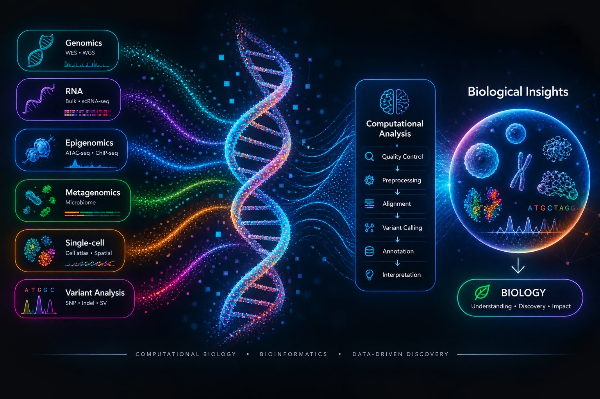

01
Genomics & Variant Analysis
WES/WGS workflows, variant calling, annotation, and ACMG/AMP-informed interpretation.

Bioinformatics researcher
Turning biological data into insight.
Exploring genomics, single-cell biology, epigenomics, and reproducible computational workflows — and building interactive tools that make complex analyses easier to understand.
My work and learning journey revolve around extracting meaningful biological signals from high-dimensional molecular data and turning complex analyses into clear, reproducible workflows.
I’m particularly interested in genomics and variant interpretation, single-cell RNA sequencing, chromatin accessibility, and the computational foundations that make modern biological research reproducible.
WES/WGS workflows, variant calling, annotation, and ACMG/AMP-informed interpretation.
scRNA-seq analysis, integration, dimensionality reduction, clustering, and cell-type annotation.
ATAC-seq quality control and analysis with a focus on chromatin accessibility and regulatory biology.
Building transparent, documented workflows, notebooks, command-line tools, and analysis resources.
An interactive human-body view with organ-level scores, an animated knowledge graph from input factors to recommendations, and an explainable “why this score” report.
Separate gut, vaginal and oral microbiome views with scores, dysbiosis-related metrics, a taxa-to-recommendation graph, an explainable report, and food and supplement examples.
Synthetic tumor profiles → variant filtering by VAF and expression → HLA-aware neoantigen ranking → a conceptual multi-epitope mRNA construct, with transparent score components.
An illustrative use case: build an antibody–drug-conjugate visualization step by step on a public IgG1 crystal structure, with real deposited ligand coordinates for each component.
I like learning by building. This space can grow with me — from command-line fundamentals to advanced computational biology.
Browse notebooks ↗A conceptual and practical learning workflow from FASTQ quality control and alignment through variant calling, annotation, and interpretation.
Notebooks on preprocessing, QC, normalization, PCA, clustering, annotation, integration, and reference mapping.
Hands-on exploration of fragment-level quality control, accessibility signals, and practical computational tooling.
For research collaborations, computational biology projects, or just a good conversation about biological data.